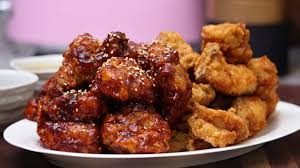

Brandon's Korean Fried Chicken
The fried chicken in this recipe is sauced two different ways: 1) A sweet
spicy marinade and 2) Soy-honey garlic marinade

INGREDIENTS:
Traditional Dredge:
- 2lbs (900g) chicken wings, separated or drumsticks
- 2 tsp (6g) salt
- 1 Tbsp (8g) grated ginger
- Fresh Cracked Pepper
- 1 cup (165g) potato starch
Sweet-spicy Sauce:
- 1/4 cup (85g) gochujang
- 3 Tbsp (45g) ketchup
- 2 Tbsp (33g) mirin
- 2 Tbsp (30g) dark soy sauce
- 2 Tbsp (42g) honey
- 1 Tbsp (15g) brown sugar
- 4 cloves grated garlic
- 1.5 Tbsp (24g) rice vinegar
Soy-honey Garlic Sauce:
- 2 Tbsp (30g) dark soy sauce
- 1.5 Tbsp (25g) mirin
- 1.5 Tbsp (22g) brown sugar
- 1 Tbsp (21g) honey
- 1 Tbsp (16g) rice vinegar
- 4 cloves grated garlic
- Fresh Cracked Pepper
INSTRUCTIONS:
Spicy Sauce Method:
- In a small bowl, whisk together gochujang, ketchup, mirin, soy sauce,
honey, and brown sugar.
- Toss into a saucepan over medium heat while stirring occasionally until
sugar has melted reaches a gentle simmer. Let simmer and reduce for
4-5 minutes.
- Mix in grated garlic. Pour into a separate container and whisk in
rice vinegar.
Soy-Garlic Sauce Method:
- In a small bowl, whisk together soy sauce, mirin, brown sugar,
and honey.
- Toss into a saucepan over medium heat whil stirring until sugar
has melted and mixture reaches a gentle simmer.
- Mix in grated garlic and let simmer for 4-5 minutes.
- Pour into a separate container and whisk in rice vinegar.
Korean Style Fried Chicken Method:
- Start by separating the wings from the thighs.
Place into a bowl and season with kosher salt, fresh cracked black pepper and grated ginger.
Toss to combine. Wrap and cure in the fridge for 1 hour to overnight.
- Dab the wings with a paper towel. Add back to the bowl with potato starch (or cornstarch)
and toss to coat generously.
- Fill a heavy bottom pot with canola oil and heat to 350F.
- Fry all the wings in batches until light golden in color. 3-4 minutes.
- Place on a wire rack to cool. Rinse and repeat with remaining chicken.
- Reheat oil to 375F and fry wings in batches a second time until golden brown.
4-5 minutes. Drain on a wire rack.
- Place wings into a bowl and coat generously with sauce before serving.
Top with sesame seeds and chopped onions.